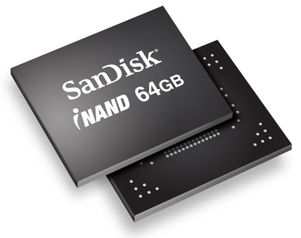

Storage
Primary storage
Primary storage is a place where data is stored for current interaction. In other words, imported digitalized data typically for the system core to work with is put in primary storage. There are three types: registers and cache (storing crucial data for CPU), random access memory (RAM, storing the working processes of programs and software applications that are running, these are erased after they are finish), and read-only memory (ROM, permanently storing immediate data to run when device is turned on). (Valacich and Schneider, 2010)
Secondary storage
Secondary storage holds products created by the core system. This means users can keep imported, manipulated, or calculated data and eventually digitalized documents, music, pictures, etc. in this sort of storage. Most mobile phones have internal secondary storage (inside and cannot be replaced) and external secondary (usually memory cards). (Valacich and Schneider, 2010)
